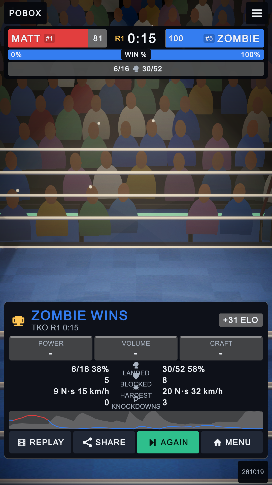
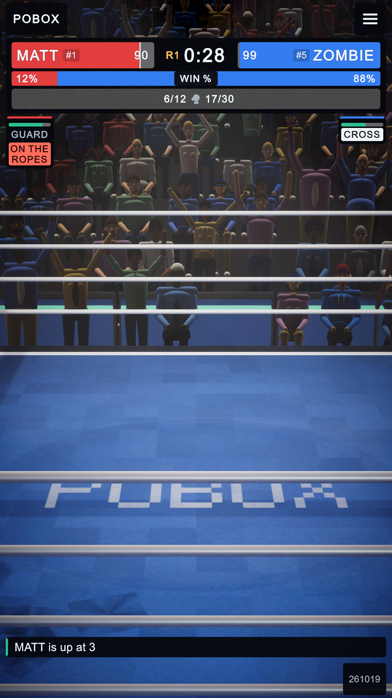
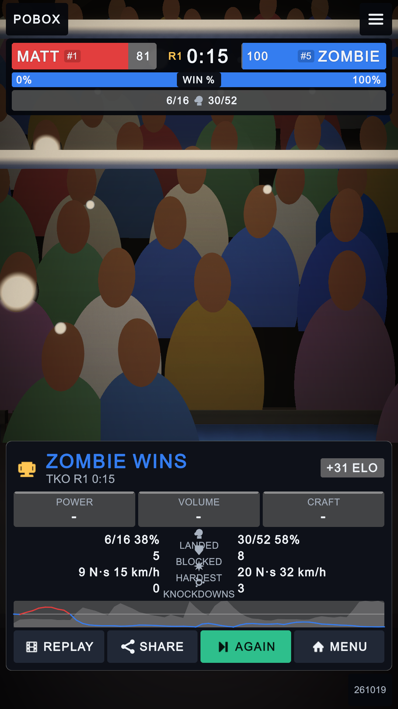
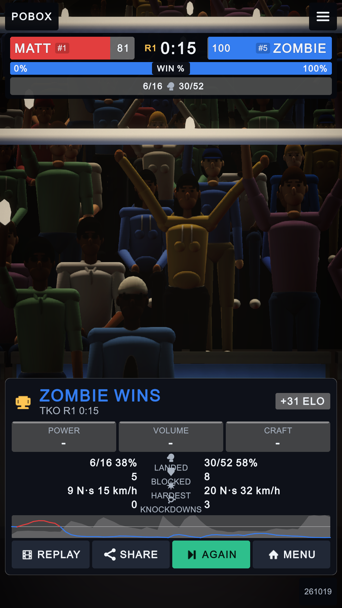
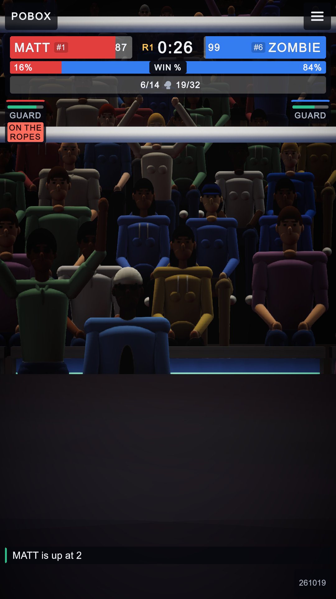

Shader PoBox/Crowd now draws each of the 1,138 quads as a 1.15 x 2.30 m card from the atlas in
Assets/Textures/Crowd (16 people x seated / arms up / phone, front and turned 40 deg views), lit with the atlas
normals (main light, ambient probe, spill from the lamps over the ring), AO from mask.A, garment tinted with the old shirt
and corner colours. Still one draw call, no new C#. The old path stays behind the _CROWD_PROCEDURAL toggle.





GPU frame time (editor, PerfTelemetry, Wide shot, vsync 60 fps): impostor 3.7-5.4 ms (typ. 4.3), procedural 4.2-4.3 ms. Difference within noise.